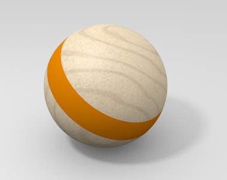
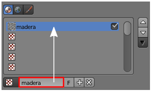
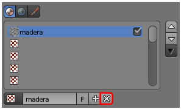
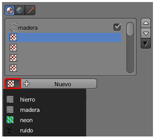

Ediciones básicas
Antes de empezar...
Entendemos la textura como un complemento a un material por lo que siempre nos aseguraremos de que el objeto tiene asignado su correspondiente material para pasar después a añadirle una textura. En ese sentido lo apropiado es considerar que la textura se añade al material y no al objeto. Por ejemplo una malla puede tener dos materiales de los cuales uno es simple y el otro lleva emparejada una textura. El ejemplo de la pelota que estudiamos en las mallas multi-materiales muestra este aspecto si el primer material lleva emparejada una textura de madera.
Aún a riesgo de parecer repetitivos vamos a mostrar las ediciones básicas relativas a las texturas aunque en esencia son muy parecidas a las de los materiales.
- Añadir una textura a un material.
- Asignarle un nombre apropiado.
- Eliminar una textura de un material.
- Asignar a un material una textura creada con anterioridad en la escena.
AÑADIR UNA TEXTURA A UN MATERIAL
Tendremos mucho cuidado de seleccionar el material adecuado en el caso de trabajar con una malla multi-material. Después pasamos al panel de Texturas  , nos aseguramos de estar añadiendo la textura al material y no al mundo con el icono correspondiente y después pulsamos el botón Nuevo.
, nos aseguramos de estar añadiendo la textura al material y no al mundo con el icono correspondiente y después pulsamos el botón Nuevo.
ASIGNARLE NOMBRE A LA TEXTURA
Es exactamente igual que en los materiales. También aquí es una buena costumbre ponerle nombres adecuados a las diferentes texturas.
ELIMINAR UNA TEXTURA DE UN MATERIAL
El signo "X" a continuación del nombre nos sirve para eliminar la textura que esté seleccionada.
ASIGNAR UNA TEXTURA YA CREADA EN LA ESCENA
Al igual que en los materiales el icono a la izquierda del nombre nos despliega todas aquellas texturas creadas en la escena para elegir entre ellas.
